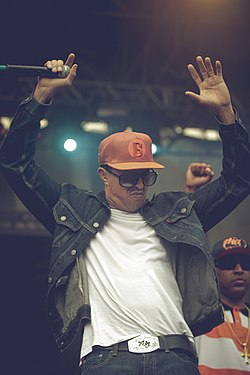

Mano Brown
Pedro Paulo Soares Pereira, conhecido como Mano Brown, é um rapper, compositor e produtor musical brasileiro. Nascido em São Paulo em 22 de abril de 1970, é um dos fundadores do grupo Racionais MC's, considerado um dos maiores e mais influentes do rap nacional.
Biografia
Mano Brown cresceu na periferia do bairro Capão Redondo, na zona sul de São Paulo. Durante sua juventude, enfrentou dificuldades sociais e se aproximou da cultura hip hop. Em 1988, fundou o grupo Racionais MC's junto com Ice Blue, Edi Rock e KL Jay, que se tornaria um dos pilares do rap brasileiro.
Resumo da Carreira
Ao longo dos anos 90, o Racionais MC's lançaram álbuns clássicos como "Raio X Brasil" (1993) e "Sobrevivendo no Inferno" (1997), que abordam temas como racismo, violência policial, desigualdade social e vida na periferia.
Mano Brown é reconhecido por sua voz marcante e letras contundentes que refletem a realidade das periferias brasileiras. Além do trabalho com o grupo, ele desenvolveu projetos solo e participações em outras produções musicais.
Nos anos 2000 e 2010, o Racionais continuaram lançando trabalhos relevantes e consolidando sua influência na cultura brasileira. Mano Brown também se envolveu em debates públicos sobre política, cultura e direitos humanos.
Músicas de Sucesso
- Negro Drama
- Diário de um Detento
- Capítulo 4, Versículo 3
- Vida Loka II
- Fim de Semana no Parque
Curiosidades
• É um dos pioneiros do rap nacional com forte engajamento social
• Participou da abertura da novela "O Mecanismo" (Netflix)
• Conhecido por sua postura crítica em relação à desigualdade social
• Influenciou diversas gerações de rappers no Brasil